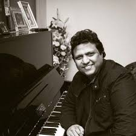

Top Music DirectorMani Sharma |
Mani Sharma was born Yanamandra Venkata Subrahmanya Sharma on 11 July 1964 in Machilipatnam, Andhra Pradesh,[5][6] and grew up in Chennai. His father was a violinist who played with composer and music producer Saluru Rajeswara Rao.[1]